Lab 2 : IMU
Prelab
For the Prelab, I read on IMU on its functionality and its datasheet.
Task 1 : Set up the IMU
1. I installed the SparkFun 9DOF IMU Breakout_ICM 20948_Arduino Library into the Arduino IDE.
2. Artemis IMU connections:

As seen above, I connected my Artemis to the IMU board QWIIC connectors. I connected to the I2C port of the IMU board.
3. IMU example code works
As shown above, the IMU example code works. The IMU board is able to read the acceleration and gyroscope data. How I did was, I ran the code and decreased the baud to 9600 to be able to see the data more easily.
3a. AD0_VAL definition. What does it represent, and should it be 0 or 1?
The AD0_VAL represents the last but of the I2C address. It should be 0 since the ADR jumper is closed; however, this depents on wheater the ADR jumper is open or closed for it be either 0 or 1.
3b. Explanation of what I see in both acceleration and gyroscope data
As I moved the IMU board, I noticed that when I moved the IMU in the positive direction of the respective axis, the accelerometer increase in value. When I moved the IMU in the negative direction of the respective axis, the accelerometer decrease in value and became negative. Also, for the gyroscope, I noticed when I did the pitch, roll, and yaw, it also changed in value.
5. Video of the Arthemis blinking
How I was able to add the blinking LED was to add the following code:
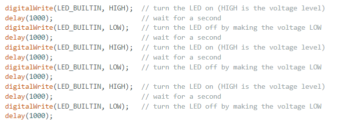
I added the code above to the void setup() function.
Task 2 : Accelerometer
The accelerometer is measured in the X, Y, and Z axis. Using the geometry and the conversions used in class, I was able to calculate the pitch and roll as shown below:
1. Equations for Pitch and Roll
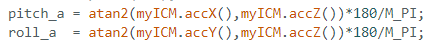
1a. Output at {-90, 0, 90} degrees for pitch and roll
As shown above, I was able to output the pitch and roll. I commented out some of the code like the gyroscope data to be able to see only the pitch and roll. From here, I was able to move the IMU board so that it can output -90 for pitch and for roll +90. However, there was slight human error becuase I had to move it slighlty to be able to get it accurate.
1b. How accurate is your accelerometer?
For the plots below, I was able to get the following values for pitch and roll by essentially adding the code from Lecture 4 into the BLE_arduino code. From there I added a case, SEND_PITCH_ROLL, which would send the pitch, roll, and time values to jupyter notebook. In the jupyter notebook, I was able to plot the pitch and roll values by breaking the string into a list and then plotting the values.
Code for case SEND_PITCH_ROLL:
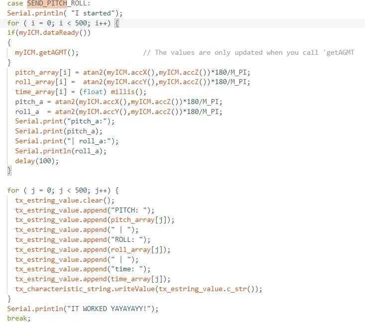
Jupyter Notebook Code:
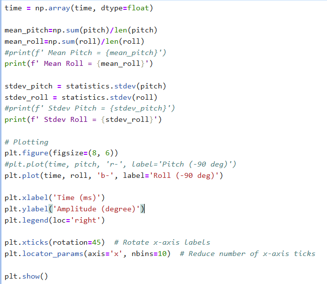

In the images above, the accelerometer is not super accurate, but it is close to the actual value. The values are not too far off from the expected value as calculated from the standard. However, there is a slight chance when I was holding the IMU board, I might have tilted a little bit, which could have caused the slight difference in the measured value and the actual value.
2. Fourier Transform of accelerometer data without noise
Fourier Transform of accelerometer data with noise
Here, I applied the Fourier Transform to the accelerometer data. I followed the process given by the article and applied it.
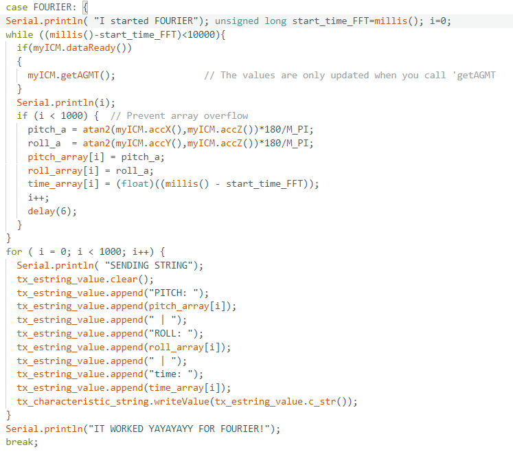
A good cutoff frequency is 10 Hz given that the bigger spikes occur near 0hz.
Applying Low Pass Filter
When applying the low pass filter, I used the following eqautions where alpha is 0.358. Also, based off the Fourier transform, I set my cutoff frequency to 10 Hz, and the sample_rate was 100 Hz. The following code was used to apply the low pass filter:
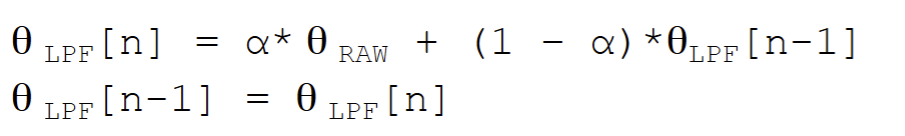
Code from the Arudino IDE:
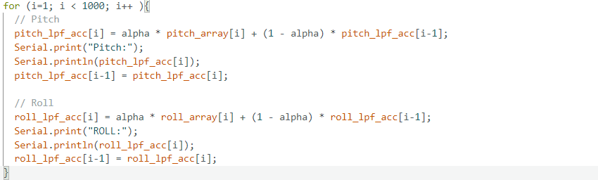
Task 3 : Gyroscope

Similar to the accelerometer, I needed to convert the gyroscope readings, originally measured in radians per second, into degrees for practical use. I achieved this through the following code:
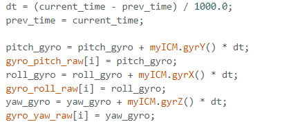
For complenmentary, I used the following equations:
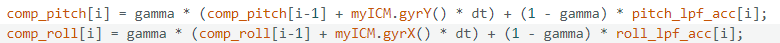
Below are the plots of the gyroscope data:
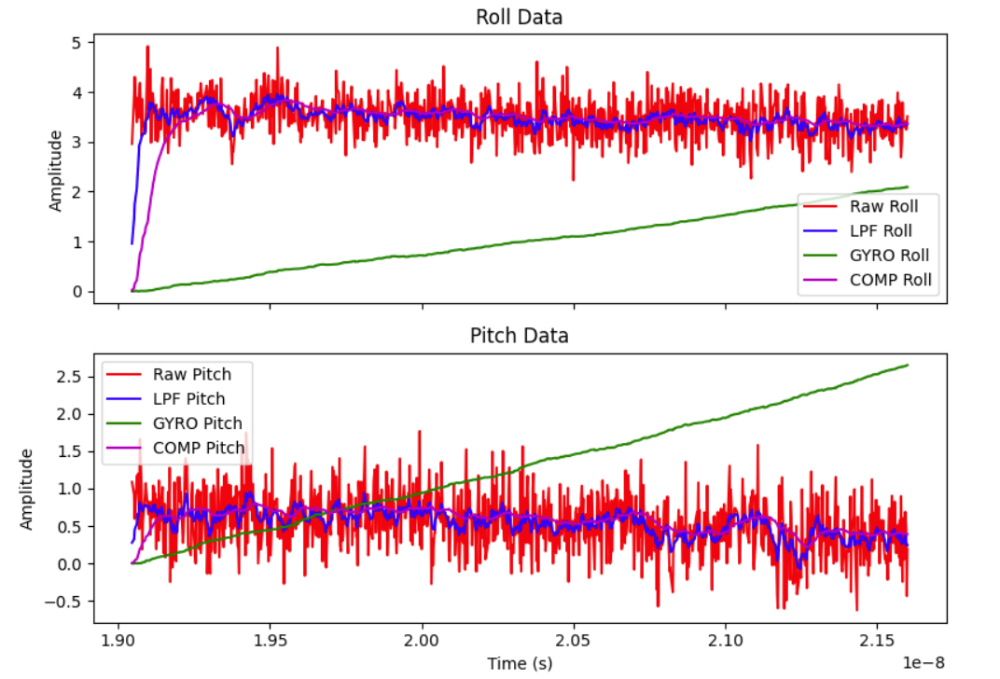
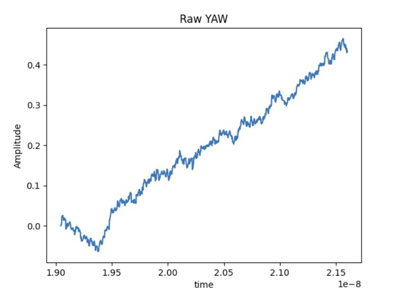
From the output,I noticed tha for pitch and roll they are pretty similar and the filtered response is more smooth and defined compared to the raw data. For yaw, it is a slope, and I did not do the complementary filter for it becuase the accelerometer is not able to measure the yaw. For the complementary it follows the same trend as the pitch and roll raw and the filtered response. Which shows that there is not much drift.
Task 4 : Sample Data!
By getting rid of the delay(10)in the code, I was able to get the sample rate to increase from 100 samples/sec to around 370 samples/sec. Similar to Lab 1, I am using a while loop to collect the data and then send it to the jupyter notebook, there is initialization of data and it stops once it hits the size of the array. A way that I can store data, is that instead of included Roll: (then some number) and etc, I will send a string of the data and then split it in the jupyter notebook. This will allow me to not use much of Arthemis's memory. I figured this out for the gryoscope part becuase I it was running out of memory, but when I did this method that I talked about above of just sending | pitch | roll | yaw | time |, it was able to store the data without running out. Also, I would personally say that it was much quicker as well.
IMU data for 5 secs:
I used the case Gyro and edited to be able to send data for 5 Secs!
In lab, we recived a car, and we were able to record a stunt. I noticed when driving the car, that it was very quick. Also, that it was very easy to do a flip, the way I was able to do this was through driving the car forward then then suddenly reversing it. I was able to make it spin in a circle, which I believe I was pressing the left and straight button. I could drive it straight, but it was very hard to turn it around to make a right or left turn. Finally, I noticed that the car is pretty robust and did not have any damage when I drove it to the wall.
Resources: I used Lecture notes, I used CHATGPT to ask it the errors I was getting on my code, and I referenced Patty Meza and Mikayla for help on the code.